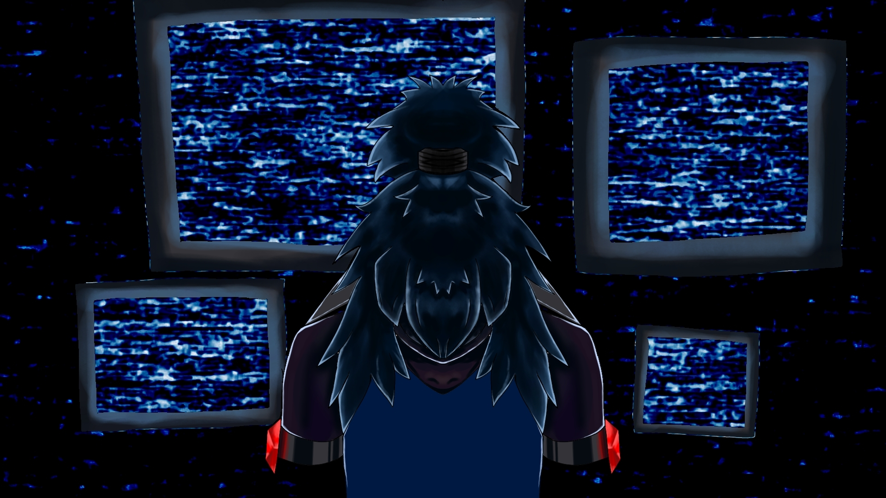

.png) Phantom protocol
Phantom protocol
«Phantom protocol»: Обьяснения концовки "Интервью"
Концовка «Интервью» (Технократическая — Холодный исследовательский интерес)

Условие получения
На протяжении финального диалога игрок вёл себя как чистый исследователь. Он задавал наводящие вопросы, фиксировал факты, проявлял научный интерес без эмпатии. Никаких попыток утешить, никаких личных обращений, никакого признания боли как чего-то, что требует сострадания, а не документации. Игрок относится к Найну как к интересному феномену, а не как к человеку.
Локация
Лаборатория. Финал. Найн на столе, подключённый к аппаратам жизнеобеспечения.
Начальное состояние персонажа
Найн ожидает решения игрока. В его взгляде ещё есть проблеск надежды на человеческий контакт, но ответы игрока последовательно гасят этот проблеск.
Ключевое отличие от других концовок
Вместо ухода (смерти, отключения аппаратов) происходит нечто иное. Тело Найна не оставляют в покое и не дают ему умереть.
Финальный статус персонажа
Найн не умирает. Он не получает освобождения. Его сохранённая копия (или сам он, приведённый в состояние вечной фиксации) может использоваться как учебный симулякр для будущих операторов Протокола.
Смысл концовки (полная расшифровка)
Самая холодная, технократичная концовка. Игрок не проявил жестокости в привычном смысле — он не мучил Найна, не издевался над ним. Но он также не проявил ни эмпатии, ни интереса к истине как к чему-то, что выходит за рамки протокола. Найн для игрока — объект исследования. И исследование доведено до логического конца: объект законсервирован для дальнейшего использования. Найн не получает вечный покой, не получает мирного ухода, не сходит с ума от абсурда. Он становится вечным учебным пособием. Его боль архивирована и будет воспроизводиться снова и снова для обучения новых операторов. Это концовка, в которой система победила полностью, превратив личность в расходный материал с функцией «сохранить для отчёта».